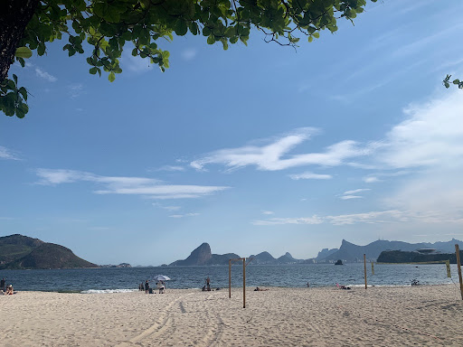
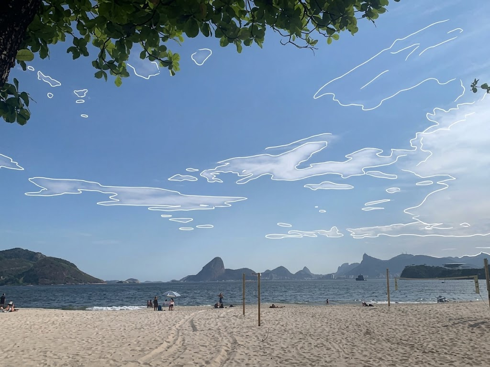

Proposta Cartográfica & Conceito
“Eu me aproximei do céu da orla da Praia de Icaraí por meio de DESENHAR AO VIVO. Fotografei nuvens altas (Cirrus e Cirrostratus) que indicaram o avanço de um sistema frontal (frente fria) associado a um ciclone extratropical que, juntamemte do movimento convectivo do ar (ascendência do ar quente e descendência do ar frio), ocasionou na formação da nuvem de tempestade Cumulonimbus (Cb), que ao atingir o seu desenvolvimentp máximo, ocasionou na ventania durante o período da noite no dia 29 de setembro de 2026. Ao CONTRAINFORMAR, transformei isso em um guia vernacular interativo de leitura do tempo, fazendo aparecer a capacidade do cidadão de ler os sinais da atmosfera diretamente pela observação do céu no tempo presente, subvertendo a dependência de aplicativos genéricos.”
1ª Operação: DESENHAR AO VIVO
Registro fotográfico realizado na Praia de Icaraí para observar a dinâmica das nuvens. Ao contornar ao vivo a morfologia das formações de altitude (Cirrus uncinus), isolou-se a assinatura visual que sucedeu a tempestade no litoral fluminense.
2ª Operação: CONTRAINFORMAR
A informação meteorológica oficial costuma ser reduzida a porcentagens abstratas em aplicativos. A transformação material utiliza este site para traduzir o conhecimento técnico em uma ferramenta de leitura direta do território e do céu pelo cidadão.
Observação de Campo e Contorno do Céu
Imagem do satélite GOES 16 no canal infravermelho da região Sudeste do Brasil

Fotografia Original da Praia de Icaraí

Contorno Vetorial das Nuvens (Desenhar ao Vivo)
